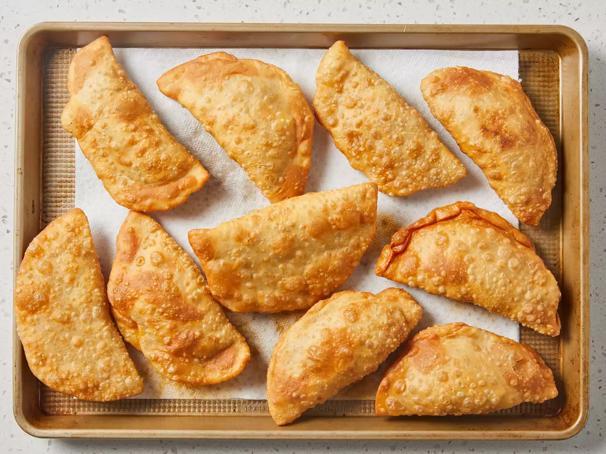

Fried Empanadas
Empanadas are delisiuos , we all know that , but do we know how to make them? guess not. Today we gonna learn how to make empanadas
Ingredients
- 2 tablespoons olive oil
- 1 small onion , chopped
- 1 1/2 pounds ground beef
- 2 tablespoons of paprika
- 1/2 teaspoon ground black pepper
- 1 pinch salt
- 1/2 cup raisins
- 1 tablespoon white vinegar
- 2 large hard-cooked egges , peeled and chopped
1 quart of oil , or as needed for frying
Directions
- Gather all Ingredients
- Make the dough: Stir flour and salt together in a medium bowl. Cut in shortening using a pastry blender until the mixture resembles coarse crumbs.
- Use a fork to stir in water, a few tablespoons at a time, until the mixture comes together.
- at into a ball and flatten slightly. Wrap in plastic wrap and refrigerate for 1 hour.
- Make the filling while dough is chilling: Heat oil in a large skillet over medium heat. Add onion and cook until tender, about 5 minutes.
- Add beef, paprika, cumin, pepper, and salt; cook and stir until beef is browned and crumbly, 5 to 7 minutes.
- Drain excess grease, then stir in the raisins and vinegar. Cover and refrigerate until chilled, about 1 hour.
- Remove dough and filling from the refrigerator. Form dough into twenty-four 2-inch balls.
- Stir hard-cooked eggs into filling.
- Heat oil in a deep-fryer to 365 degrees F (180 degrees C).
- While the oil is heating, roll one ball dough on a floured surface into a thin circle. Spoon some filling onto the center, fold dough into a half-moon shape, and press the edges with your fingers to seal. Repeat to fill and form remaining empanadas.
- Working in batches, fry 1 to 2 empanadas at a time in hot oil until browned, about 2 1/2 minutes per side.
- Drain on paper towels. Serve hot.
